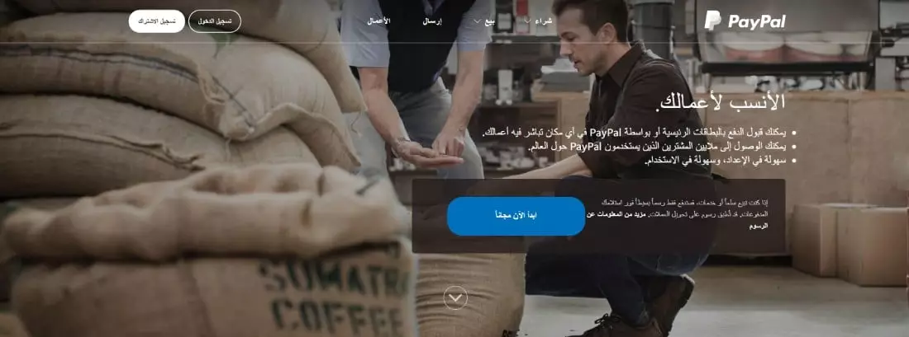

1-باي بال PayPal

تأتي باي بال PayPal في صدارة افضل بوابات الدفع الالكتروني ليس في المنطقة العربية فقط بل وفي العالم أجمع.
وما تتيحه البوابة من خدمات ومزايا تنافسية للأفراد والشركات والمتاجر الإلكترونية جعلها تحتل تلك المكانة في مجال معالجة المدفوعات إلكترونيًا.
وتتميز خدمات إرسال واستقبال الأموال لديها بالأمان عبر الحسابات الشخصية أو المواقع الإلكترونية.
وهو أكثر ما يبحث عنه أطراف المعاملات المالية على الإنترنت
اهم المميزات
1- تعتبر PayPal طريقة أكثر بساطة وأمانًا للدفع والحصول على أموال
2- إنها وسيلة إلكترونية لمن يدفع أو يحصل على أجر
================
2- مُيسر Moyasar

تُعتبر مُيسر بوابة دفع رائدة في السعودية وواحدة من أبرز الحلول العربية الأصل في معالجة عمليات الدفع الالكتروني.
لذا يعتمد عليها عدد ليس بالقليل من المتاجر الالكترونية وشركات الأعمال المختلفة في المنطقة العربية بشكل أساسي.
اهم المميزات
1- سهولة الاستخدام
2- ومرونة الخصائص